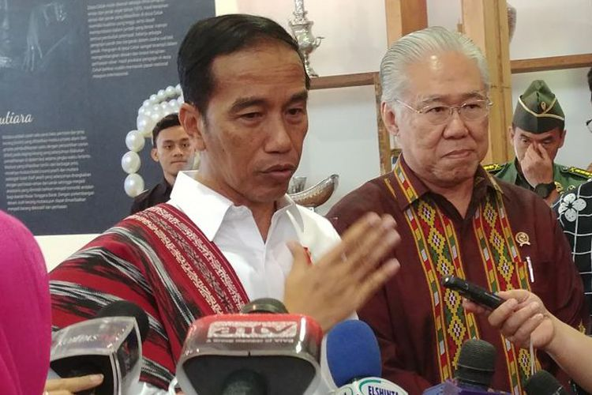

Jokowi sudah minta penjelasan panglima TNI soal isu pembelian senjata
IHSANUDDIN
KabarKabur.com - 27/09/2017, 12:51 WIB

Presiden Joko Widodo usai menghadiri pameran kriyanusa di Jakarta Convention Center, Jakarta, Rabu (27/9/2017).
kabarkabur.com - Presiden Joko Widodo sudah bertemu dengan Panglima TNI Jenderal TNI Gatot Nurmantyo.
Pertemuan berlangsung di Bandar Udara Halim Perdanakusuma, Jakarta, Selasa (27/9/2017) malam, saat Jokowi tiba dari kunjungan kerja di Provinsi Bali.
Hal ini disampaikan Jokowi saat ditanya wartawan mengenai pernyataan Gatot yang kerap menimbulkan polemik.
Terakhir, Gatot menyebut adanya institusi nonmiliter yang membeli 5000 pucuk senjata.
Pernyataan soal 5000 pucuk itu disampaikan secara tertutup dalam pertemuan Panglima TNI dengan para purnawirawan padapekan lalu. Namun, rekaman pembicaraan tersebut bocor ke media sosial.
"Ya tadi malam, setelah saya dari Bali, (Panglima) sudah bertemu saya di Halim. Sudah dijelaskan," kata Jokowi kepada wartawan di Jakarta Convention Center, Senayan, Rabu (27/9/2017).
Panglima TNI memang biasanya mengantar dan menjemput di Bandara Halim tiap kali Jokowi melakukan perjalanan ke luar kota atau luar negeri.
Jokowi mengaku tidak bisa mengungkapkan soal penjelasan yang disampaikan Panglima kepadanya. Menurut dia, tidak semua informasi bisa disampaikan ke publik.
Ia justru meminta publik untuk mengacu pada pernyataan yang disampaikan Menteri Koordinator bidang Politik Hukum dan Keamanan Wiranto.
Wiranto sudah meluruskan informasi yang disampaikan Panglima. Menurut dia, memang ada pembelian senjata oleh Badan Intelijen Negara (BIN) kepada PT Pindad sebanyak 500 pucuk, bukan 5000 pucuk.
Senjata itu dibeli untuk keperluan sekolah intelijen BIN. Senjata yang dipesan BIN memang berbeda dengan senjata yang biasa digunakan oleh militer Indonesia.
Karenya, kata dia, izin pembelian cukup ke Mabes Polri dan tidak perlu ke Mabes TNI.
Wiranto mengakui mengakui ada kesalahan komunikasi antara Panglima dengan Kepala BIN Jenderal Budi Gunawan dan Kapolri Jenderal Pol Tito Karnavian.
"Saya kira penjelasan dari Menko Polhukam sudah jelas. Saya kira tidak usah saya ulang lagi," ucap Jokowi.
Penulis : ihsanuddin
Editor : Sandro Gatra